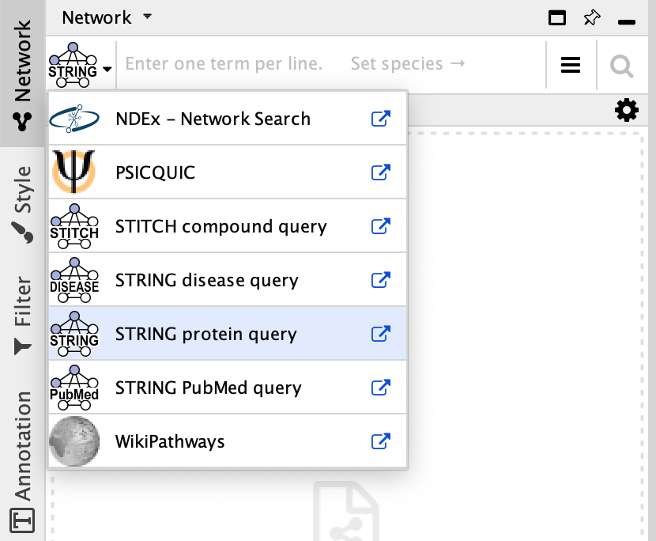
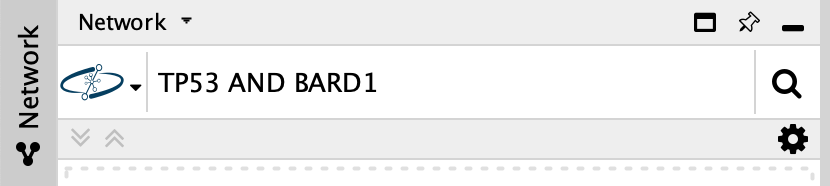
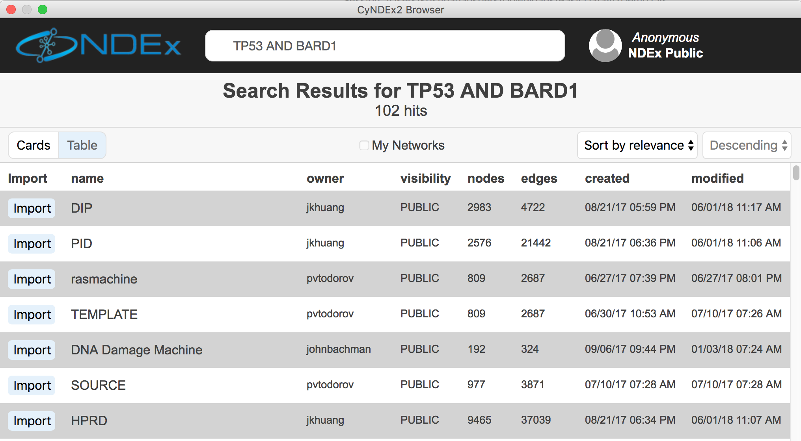
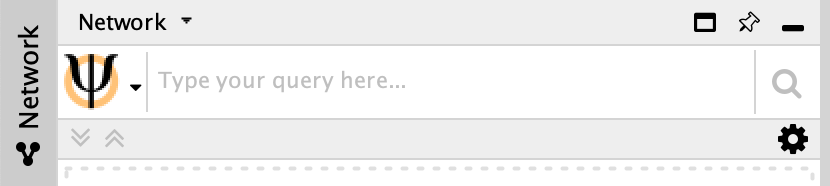
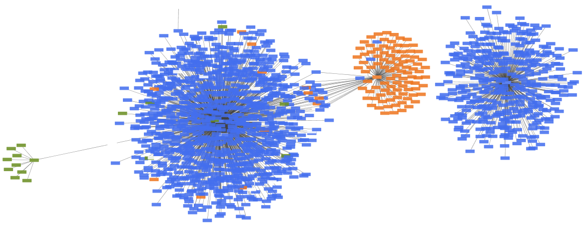
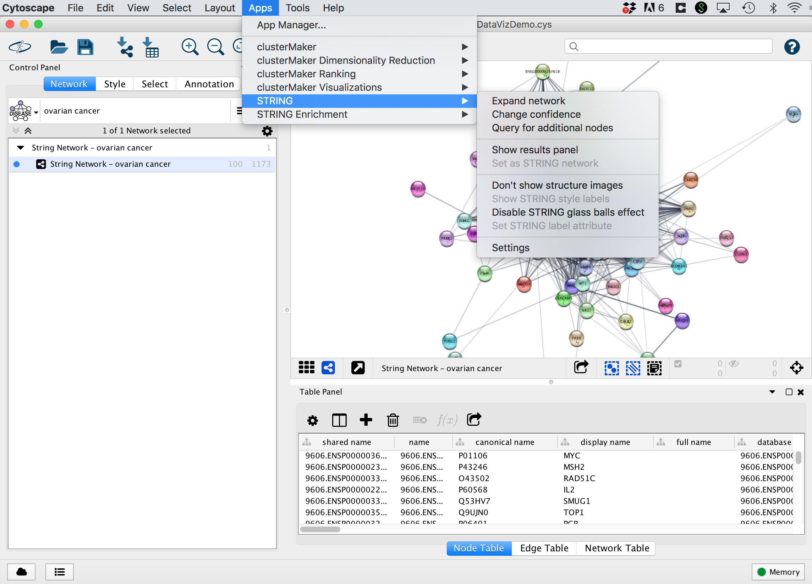
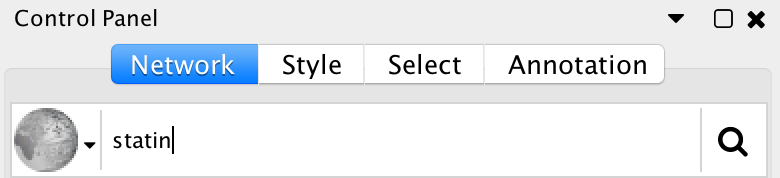

Loading Networks
In Cytoscape, network data can be loaded from a variety of sources, and in several different formats. Where you get your network data depends on your biological question and analysis plan. This tutorial outlines how to load network data from several popular sources and formats. To learn more about finding network data, see our Finding Network Data presentation.
- Public databases
- NDEx
- PSICQUIC
- STRING/STITCH
- WikiPathways
- Local and remote files
- Cytoscape apps (Biopax, KEGG and other formats)

Networks from Public Data
Cytoscape includes a Network Search tool at the top of the Network tab in the Control Panel for easy import of public network data. In addition to core apps that are included with your Cytoscape installation (NDEx and PSICQUIC), the resources listed here will depend on which apps you have installed.
NDEx
The NDEx Project provides an open-source framework where scientists and organizations can share, store, manipulate, and publish biological network knowledge.
- To search NDEx, select it from the
Network Search tool drop-down. - Type in your search terms and click
Enter to search.
- Results listing all relevant NDEx networks will open in the CyNDEx2 browser. Select one or more networks to import by clicking the
Import button to the left.


PSICQUIC
PSICQUIC contains data from multiple sources and types, including internally curated, experimentally observed and predicted. PSICQUIC web service access in Cytoscape is included as a core app.
- To search PSICQUIC, select it from the
Network Search tool drop-down. - Type in your search terms and click
Enter to search.
- PSICQUIC search results are displayed as a list of data sources to choose from. For this tutorial, select BioGRID and Reactome-FIs.
- Check the option for
Automatic Network Merge . ClickImport to continue.

The resulting merged network is a combination of interaction data from BioGrid and Reactome. PSICQUIC includes data from several species, denoted by the different node colors.
STRING/STITCH
STRING is a database of known and predicted protein-protein interactions, and STITCH stored known and predicted interactions between chemicals and proteins. Data types include:
- Genomic Context Predictions
- High-throughput Lab Experiments
- (Conserved) Co-Expression
- Automated Textmining
- Previous Knowledge in Databases
- To search STRING, select
STRING disease query in the drop-down at the top of theNetwork tab in theControl Panel and type your search term. - Click
Enter to search. The resulting network will load automatically:

- Networks load with a STRING-specific style, which includes 3D protein structure diagrams.
- STRING networks also inlcude data as node/interaction attributes, that can be used to create a Style.
- The STRING app includes options to change interaction confidence level, expand the network etc.

WikiPathways
WikiPathways is a collaborative wiki platform with manually pathway models. It currently covers over 2,600 pathways in 25 species-specific collections.
- To search WikiPathways, select it from the
Network Search tool drop-down. - Type in your search terms and click
Enter to search.
- WikiPathways search results are displayed as a list of all available pathway models matching the search term.
- To restrict the results to a specific specues, use the
Only selector at the top and pick a species from the drop-down. - Pathway models will open with the original pathway layout by default. To open the pathway as a network, select the
Import as Network option.

WikiPathways model imported as pathway and network.


Local and Remote Files
Cytoscape can load locally and remotely stored network data files in a variety of file formats:
- SIF: Simple interaction format
- NNF: Nested network format
- GML and XGMML formats
- CYS: Cytoscape session file
- Delimited text and Excel format
Loading SIF files
SIF is a simple interaction format consisting of three columns of data: source, interaction and target. To learn more about the SIF format, see the Cytoscape manual.
- Download galFiltered.sif. This sample file is also included with your Cytoscape installation, in the sampleData folder.
- Load the network via
File → Import → Network from File.... - To see the whole network, select
View → Fit Content .

Loading XGMML files
XGMML is an XML format and can includes node and edge attributes as well as visual style properties. To learn more about the XGMML format, see the Cytoscape manual.
- Go to
File → Import → Network from URL.... and enter the following URL: https://raw.githubusercontent.com/cytoscape/cytoscape-tutorials/gh-pages/protocols/data/BasicDataVizDemo.xgmml - This is the same network as in the previous step, but with node fill color corresponding to expression values.
Cytoscape apps
The Cytoscape App Store has many apps for importing data in various formats. For example, to find all apps that enable import of Biopax format data, search the App Store for "Biopax". Or to see all apps related to data import, click the